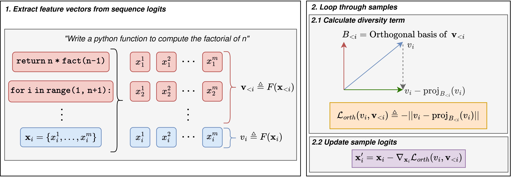

Diverse outputs in text generation are necessary for effective exploration in complex reasoning tasks, such as code generation and mathematical problem solving. Such Pass@k problems benefit from distinct candidates covering the solution space. However, traditional sampling approaches often waste computational resources on repetitive failure modes.
While Diffusion Language Models (DLMs) have emerged as a competitive alternative to the prevailing Autoregressive paradigm, they remain susceptible to this redundancy. To address this, we propose ODD (Orthogonal Diverse Diffusion), a training-free, low-cost intervention to enhance generative diversity.
Our approach modifies intermediate samples in a batch sequentially, where each sample is repelled from the feature space of previous samples, actively penalizing redundancy. Unlike prior methods that require retraining or beam search, our strategy incurs negligible computational overhead while ensuring that each sample contributes a unique perspective. We evaluate our method on HumanEval and GSM8K using the LLaDA-8B-Instruct model, demonstrating significantly improved diversity and Pass@k performance.
In reasoning tasks like mathematics or coding, standard sampling methods typically rely on temperature scaling to induce variance. However, this is insufficient for effective exploration:
Finding correct reasoning paths requires structured exploration. DLMs offer a unique advantage: they refine the entire sequence simultaneously. This global view allows us to enforce meaningful diversity across the batch throughout generation without sacrificing quality.

We introduce a training-free inference intervention called Orthogonal Diverse Diffusion. We extract a feature vector \(v_i\) for each sample from its intermediate logits and maintain an orthogonal basis \(B_{<i}\) spanning the feature space of all previous samples.
The diversity loss is defined as the projection of the current sample onto this subspace:
To apply this intervention, we update the model logits \(\mathbf{x}_i\) by taking a step against the gradient of this loss, scaled by a step size \(\alpha\):
This "pushes" the current sample toward the null space of previous generations, forcing it to find a valid solution that is geometrically distinct. By scaling the repulsion with a quality score \(q_i\), we ensure that we only enforce diversity where the model is confident, avoiding the incoherence typical of high-temperature sampling.
We evaluated ODD on a subset of the GSM8K (reasoning) and HumanEval (coding) benchmarks using LLaDA-8B-Instruct. The table below shows the performance range across different repulsion strengths \(\alpha \in [2, 128]\).
| Benchmark | Method | Temperature (\(\theta\)) | ||||
|---|---|---|---|---|---|---|
| 0.0 | 0.5 | 1.0 | 1.5 | 2.0 | ||
| GSM8K (200 Problems) (Pass@16) |
Baseline | 61.0 | 74.8 | 81.3 | 83.4 | 76.5 |
| ODD (Ours) |
Min: 69.8 Max: 79.1 | Min: 80.8 Max: 87.6 | Min: 83.2 Max: 87.9 | Min: 83.1 Max: 88.6 | Min: 78.2 Max: 87.8 | |
| HumanEval (Pass@16) |
Baseline | 19.5 | 33.3 | 42.4 | 41.8 | 7.7 |
| ODD (Ours) | Min: 28.2 Max: 41.5 | Min: 37.0 Max: 48.3 | Min: 44.8 Max: 51.3 | Min: 43.6 Max: 51.7 | Min: 8.2 Max: 39.6 | |
Table 1: Pass@16 performance. The values show the range of performance achieved across different repulsion strengths \(\alpha\). ODD consistently improves upon the baseline across all temperature settings, with particularly strong gains in the greedy (\(\theta=0\)) and high-noise (\(\theta=2\)) regimes.
A key advantage of ODD is its efficiency. The table below summarizes the average wall-time latency per batch for standard generation versus ODD.
| Method | GSM8K (s) | HumanEval (s) |
|---|---|---|
| Baseline (Standard) | 22.5 ± 0.3 | 30.8 ± 0.4 |
| ODD (Ours) | 23.8 ± 0.5 | 32.0 ± 0.2 |
| Relative Overhead | +5.8% | +3.9% |
Table 2: Average wall-time execution per batch (\(B=16\)). ODD introduces negligible latency (< 6%) while significantly boosting Pass@16.
Understanding how diversity interventions affect the generation trajectory is crucial. We provide an interactive Streamlit application (`app.py`) that allows users to visualise the diffusion process in real-time.
Figure 3: Screen recording of the app.py dashboard showing real-time generation dynamics.
@article{lamont2025odd,
title={Free Lunch for Pass@k? Low Cost Diverse Sampling for Diffusion Language Models},
author={Lamont, Sean and Walder, Christian and Montague, Paul and Dezfouli, Amir and Norrish, Michael},
journal={arXiv preprint},
year={2025}
}